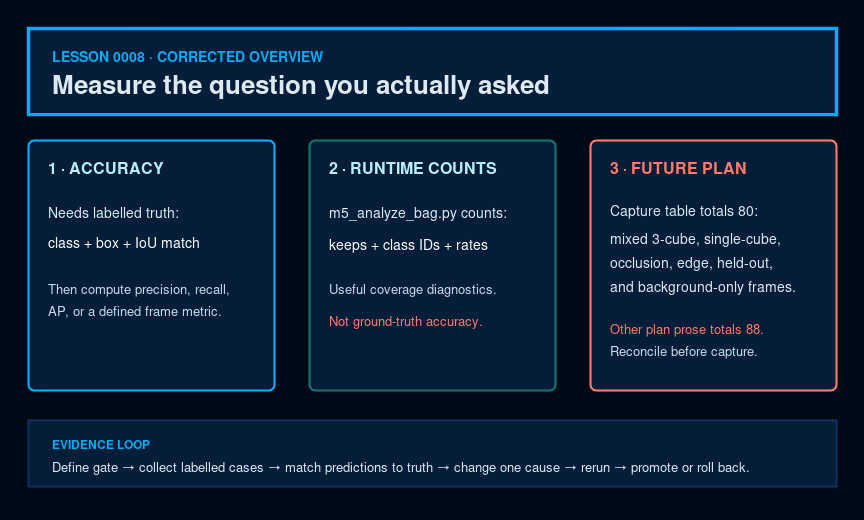

Software · AI · Robotics / Learning system
Lesson 0008 — Evaluation and fine-tuning
Measure before changing. This lesson turns the current M5 evidence into an evaluation loop and separates a planned fine-tune from a verified deployment result.
How to use this lesson
Read the explanation, inspect the visual, make a prediction, and then compare it with the repository evidence. The goal is a model of this project that you can explain—not a list of framework slogans.

The question this lesson answers
How do we decide whether a detector is good enough, and how do we improve it without confusing a plausible change with a verified fix? The answer is an evidence loop: define a gate, capture a controlled case, analyze the result, change one cause, and rerun the same gate with rollback available.
Status boundary
The M3d-revived plan is a recommendation, not completed evidence. It proposes a positive-domain fine-tune because M5 is PARTIAL; no new model should be described as successful until its regression and live gates pass.
1. Define “success” before collecting data
The project definition names three high-level targets: at least 80% color-classification accuracy on a structured 50-frame test, at least 5 fps inference on the Jetson, and an operating distance of 20–80 cm. The M5 acceptance report adds stricter implementation gates such as an empty-scene zero-keep result, three cube classes in the cubes bag, and a 25 Hz frame-loop target. These are related but not interchangeable measurements.
2. Use a metric that matches the question
| Question | Useful measurement | Do not substitute |
|---|---|---|
| Is detection/classification correct? | ground-truth matching by class and IoU, then precision/recall/AP or a precisely defined frame-level accuracy | class occurrence or keep count |
| Does each class ever appear when expected? | per-class frame-hit and keep count as a coverage diagnostic | accuracy |
| Does the empty scene stay quiet? | false keeps on empty/distractor frames | validation mAP alone |
| Is the node responsive? | publish/frame-loop rate and p50/p95 latency | GPU-only benchmark qps |
| Did the model retain training knowledge? | held-out Roboflow validation mAP | training loss alone |
Analyzer boundary
m5_analyze_bag.py counts published class IDs; it does not load ground-truth boxes or perform IoU matching. Its keeps and class occurrences are useful runtime diagnostics, but false positives can increase them. Do not report those counts as accuracy.
3. Build a test matrix, not a single demo
A useful matrix names the object classes, scene type, distance, viewpoint, lighting, and expected outcome before looking at the predictions. Empty scenes measure false positives. Cubes-in-frame scenes measure positives. Repeated frames at the same setup reveal whether a result is stable rather than a lucky single frame.
The proposed M6 distance bands are useful only when capture and labeling preserve the context of each frame.
4. Capture evidence with provenance
The repository's capture scripts save images or ROS bags alongside metadata and SHA-256 checks. capture_frames.py is the RGB saver; capture_rgb_depth_sync.py handles synchronized RGB/depth pairs. Integrity metadata tells us what was analyzed; it does not make the labels correct by itself.
5. Replay and analyze instead of eyeballing one frame
m5_analyze_bag.py extracts per-class kept counts, publish rate, RGB rate, and other summary evidence from a bag. m5_parse_latency.py parses latency summaries. This separation turns a long run into numbers that can be compared across model versions. [recorded M5 results]
Interactive: choose the next action after a miss
Repeat the same capture and confirm the miss is stable before changing the model.
6. Read the current M5 result as a matrix
| Bag / setting | Messages | Total kept | What it tells us |
|---|---|---|---|
| Empty, conf 0.50 | 439 | 0 | observed empty-scene false-keep result; physical geometry reason unvalidated |
| Cubes sticker-on, conf 0.50 | 414 | 0 | positive gate fails |
| Cubes sticker-off, conf 0.50 | 460 | 0 | sticker hypothesis did not explain failure |
| Cubes sticker-off, conf 0.25 | 439 | 2 green | threshold-only rescue is insufficient |
The current live rate is also measurable: roughly 15.2–15.9 Hz for the node frame loop, with about 26.6 ms YOLO time. Keep this separate from the project-level 5 fps target and from correctness.
7. Acceptance gates are conjunctive
The M3d-revived plan proposes that a candidate must preserve empty-scene behavior, keep Roboflow validation mAP@0.5 at or above 0.80, and meet the cubes-in-frame bar of at least three keeps covering all three classes at confidence 0.50. Its geometry regression must be treated as behavior-only until the reversed depth sign is corrected; after correction, define a physically valid geometry gate. A candidate that fixes blue but regresses empty scenes is not a pass. “Better on one screenshot” is not a gate.
8. Fine-tuning is a targeted intervention
The recommended plan targets 80 new JetRover-room RGB frames, but not all frames contain all three cubes. Its capture table includes 48 three-cube distance-band frames, 4 lighting frames, 9 single-cube frames, 4 partial-occlusion frames after trimming, 4 background-only frames, 3 edge-angle frames, and 8 held-out M5c2-layout replicates. The prose immediately above that table still says every frame has exactly three cubes. A later dataset table separately claims 76 positive training frames, 4 background training frames, and 8 held-out replicates—88 new frames rather than 80. These are planning defects; reconcile the exact split before collection or training.
Only after that specification is reconciled does the plan continue from models/best.pt for 30 epochs at lr0=0.0005, image size 640, batch 16, and seed 42. The purpose is to test whether representative room-domain data improves positive detections—not to assume that it will, replace YOLOv5, add a fourth class, or lower the production threshold indefinitely.
Before retraining: reconcile the class mapping. The current model, normalized dataset, and node use 0=blue_cube, 1=green_cube, 2=red_cube, while docs/project-definition.md still lists red/green/blue. A fine-tune with an unexamined mapping could make otherwise plausible metrics meaningless.
PLANNED, NOT YET EXECUTED:
python scripts/finetune_jetrover_positives.py \\
--data data/jetrover_v2/data.yaml --base models/best.pt \\
--out models/best_v2.pt --epochs 30 --batch 16 \\
--imgsz 640 --lr0 0.0005 --device 0 --patience 20The planned script scripts/finetune_jetrover_positives.py is not present in the current checkout. This block documents the plan; it is not a command to run as if implementation already existed.
9. Protect the validation signal
The proposed merged dataset keeps the original Roboflow validation images untouched, adds held-out JetRover replicates as a room-domain validation set, and preserves a test split. The plan's target composition is 170 train images, 17 validation images, and 4 test images. Those numbers are proposed future dataset counts, not current artifacts.
Also verify the capture-tool boundary before a physical session: the plan's example verifier syntax does not match the current verify_camera_samples.py CLI, which expects a positional directory plus --prefix. Reconcile the exact capture and verification commands before collecting data.
10. Re-export and regression-test the entire chain
After a fine-tune, the plan requires a new ONNX export and checker, TensorRT engine construction on the Jetson, ONNX smoke inference, geometry regression, and M5 live bags. The geometry regression must include the corrected sign and labelled raised/floor cases; merely reproducing current KEEP/REJECT counts would preserve the defect. Changing best.pt without re-exporting and re-running the downstream checks would leave the deployed engine stale.
11. Rollback is part of responsible improvement
The current models/best.pt is preserved unchanged. A candidate such as best_v2.pt remains separate until the acceptance gate passes. If it fails, point the configuration back to the preserved artifact and record the outcome. This makes a model experiment reversible and keeps the production baseline identifiable.
12. Check your understanding
Why use more than one evaluation context?
What is the status of the M3d-revived fine-tune?
When is a candidate ready for promotion?
13. Tiny read-only exercise
Open evaluation/evaluate.py before attempting to use it. Its current main() contains only pass, so it is a documented placeholder rather than a working evaluator. Use the recorded M5 report and the capture/analyzer scripts as the current evidence sources.
Checking key
Ask: Are the images labeled? Is the context named? Are empty and positive cases separated? Is the model artifact identified? Are correctness, false positives, and speed reported separately? Can the result be reproduced and rolled back?
14. Explain it back
Explain this without reading: “Why is fine-tuning a hypothesis-driven experiment rather than a magic accuracy button?”
Include the current M5 evidence, one proposed data change, one held-out gate, and the rollback point.
What this lesson intentionally postpones
This lesson intentionally postpones implementing the future evaluation/fine-tuning scripts, choosing new hyperparameters beyond the recorded plan, and collecting physical robot data. It teaches how to make those decisions responsibly.
Primary references and next lesson
- COCO detection evaluation — the primary benchmark definition for IoU-based AP/AR evaluation.
- Ultralytics performance-metrics guide — practical interpretation of precision, recall, IoU, and mAP.
- Project README and the linked canonical documentation.
- Curriculum plan — scope, teaching contract, and project truth.
- Lesson 0009 — Project Walkthrough and Interview Practice: explain the complete system and own its limits.